데이터베이스 한 대로 버티다 막히는 지점
영상은 존과 앨런이 만든 가상의 SNS(Social Networking Service) 'Chirp' 하나를 끝까지 따라가요. 가입하고, 짧은 글을 올리고, 서로 팔로우하는 앱이에요. 처음에는 앱 서버 한 대와 데이터베이스 한 대로 돌아가요.
아래 화면 오른쪽에 테이블 두 개가 보여요. 위쪽 users는 사용자 이름과 팔로워 수를, 아래쪽 chirps는 누가 어떤 글을 썼는지를 담아요. 가운데 'WRITE'와 'READ' 표시가 데이터베이스로 하는 일 두 가지예요. 글을 올리거나 팔로우하면 쓰기, 프로필을 열면 읽기예요.
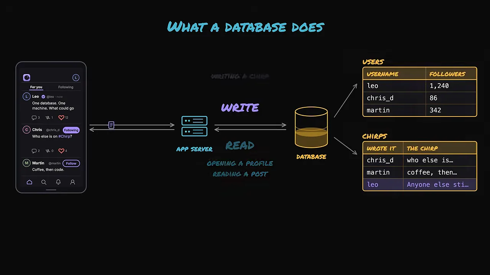
더 큰 기계로 버티다가 한계에 닿아요
사용자가 200명에서 2,000명, 20만 명으로 늘 때마다 두 사람은 더 큰 데이터베이스로 바꿔요. 이렇게 기계 한 대의 사양을 키우는 걸 스케일업이라고 해요. 하지만 수백만 명이 되면 클라우드 회사가 빌려주는 가장 비싼 기계도 모자라요.
아래 화면 왼쪽 아래 빨간 막대가 'OPEN A PROFILE 3.0 s'예요. 30밀리초 걸리던 프로필 열기가 3초가 됐어요. 앱 서버와 데이터베이스 사이에 'QUERIES PILE UP'이라고 쓰인 줄이 쿼리가 쌓여 기다리는 모습이에요.
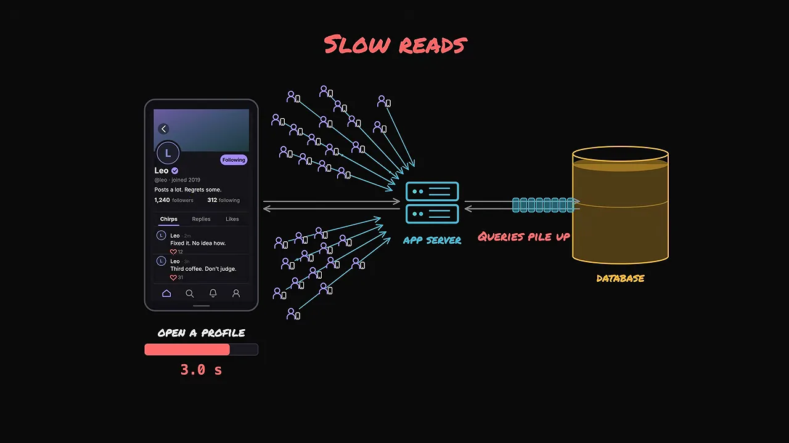
읽기는 레플리카로 나눠요
실무에서는 원래 데이터베이스를 한 대만 두지 않아요. 프라이머리가 죽으면 대신 나설 레플리카를 한두 대 둬요. 레플리카도 데이터 전체를 갖고 있으니 읽기에 답할 수 있어요. 아래 화면에서 앱 서버 오른쪽의 로드 밸런서가 읽기 요청을 'PRIMARY', 'REPLICA 1', 'REPLICA 2' 세 대로 나눠 보내요.
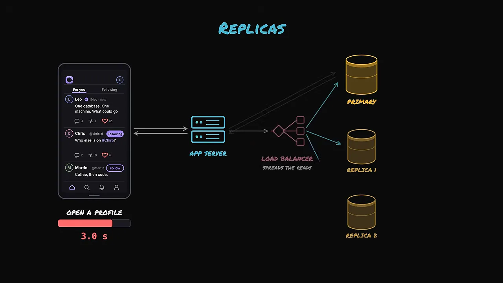
쓰기는 왜 레플리카에 나눌 수 없을까요
영상이 가장 강조하는 대목이에요. 레오의 글에 좋아요가 99개 있을 때 크리스와 마틴이 동시에 좋아요를 눌러요. 아래 화면 오른쪽 상자 두 개를 보면 프라이머리도 레플리카도 '99 → 100'이라고 적었어요. 둘 다 틀렸어요. 진짜 값은 101이에요.
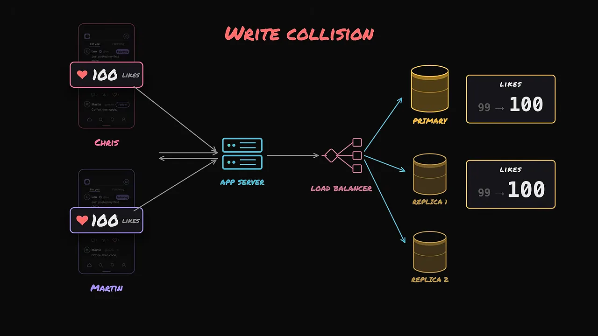
값을 덮어쓰는 경우는 더 곤란해요. x가 7일 때 프라이머리는 9로, 레플리카는 10으로 바꾸면 화면처럼 'WHICH ONE IS X?'라는 질문만 남아요. 이런 불일치 때문에 쓰기는 모두 프라이머리로 보내고, 프라이머리를 기준값(source of truth)으로 삼아요. 레플리카는 그걸 복사만 해요.
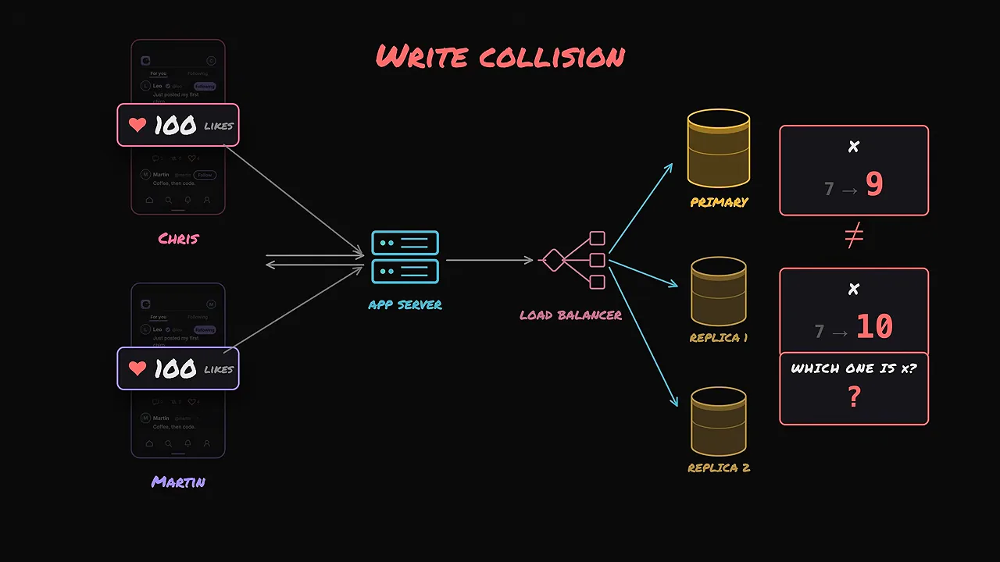
그래서 구조는 아래처럼 돼요. 프라이머리 옆에는 'READS + WRITES', 레플리카 옆에는 'READS ONLY'가 붙어 있어요. 화면 아래 문구가 이 구간의 결론이에요. 'READS got easier. WRITES did not.'
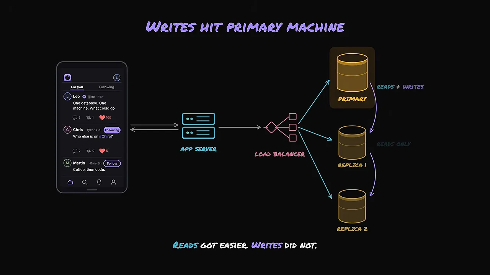
영상이 여기까지 밟아 온 길을 한 장에 모으면 이래요. 단계마다 무엇이 풀리고 무엇이 남는지 보면, 왜 결국 샤딩까지 가는지 보여요.
flowchart LR A["기계 키우기
200 → 20만 명"] -->|"가장 큰 기계도 모자람"| B["레플리카
읽기를 나눔"] B -->|"쓰기는 프라이머리 한 대"| C["샤딩
쓰기를 나눔"]
샤딩: 행을 여러 대에 나눠 담기
샤딩은 행을 여러 기계에 나눠 담아서 어느 기계도 데이터 전체를 갖지 않게 하는 방법이에요. 더 큰 기계 한 대를 빌리는 것과 정반대로, 평범한 기계를 여러 대 두고 행을 나눠요. 그래서 다른 이름이 수평 확장이에요.
아래 화면에서 샤드 네 개가 가로로 늘어서 있고, 각 샤드에 'row 1, row 5', 'row 2, row 6'처럼 행이 두 개씩 들어 있어요. 맨 아래 화살표가 'HORIZONTAL SCALING'이에요. 위쪽에 흐리게 보이는 원통 하나가 원래의 데이터베이스예요.
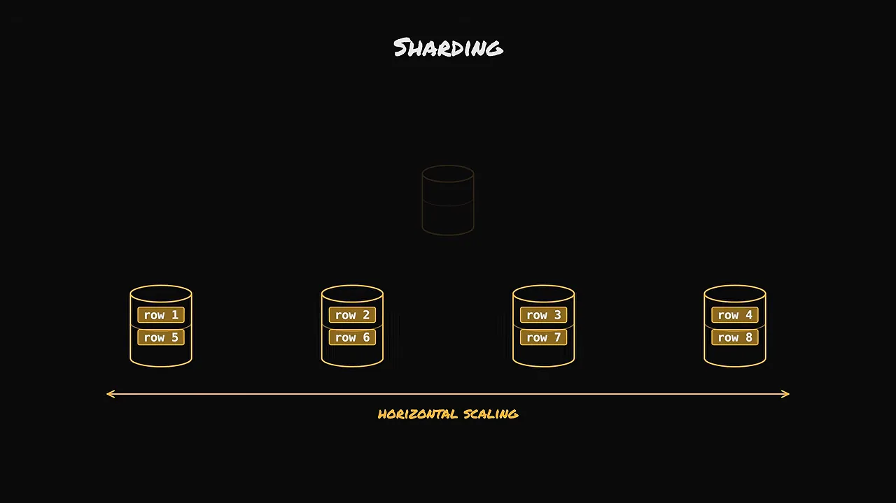
ID를 4로 나눈 나머지로 샤드를 정해요
존과 앨런은 기계 네 대를 두고 규칙 하나를 정해요. 사용자 ID(Identifier)를 4로 나눈 나머지가 샤드 번호예요. 나머지는 늘 0, 1, 2, 3 중 하나라서 샤드 네 개에 딱 맞아요. 아래 화면 맨 위에 'ID 12 ÷ 4 → REMAINDER'가 있고, 레오(ID 12)는 나머지 0이라 샤드 0의 첫 줄에 들어가 있어요.
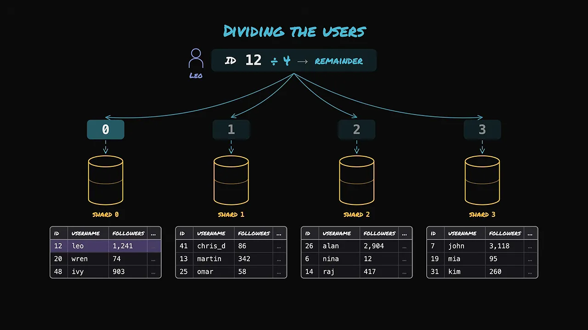
쓰기를 받는 기계가 늘어나요
샤딩 전에는 쓰기가 화면 왼쪽처럼 프라이머리 하나로만 갔어요. 이제는 샤드마다 쓰기를 받는 프라이머리가 하나씩 있어요. 네 대로 모자라면 오른쪽 화면처럼 여덟 대, 그 이상으로 늘리면 돼요.
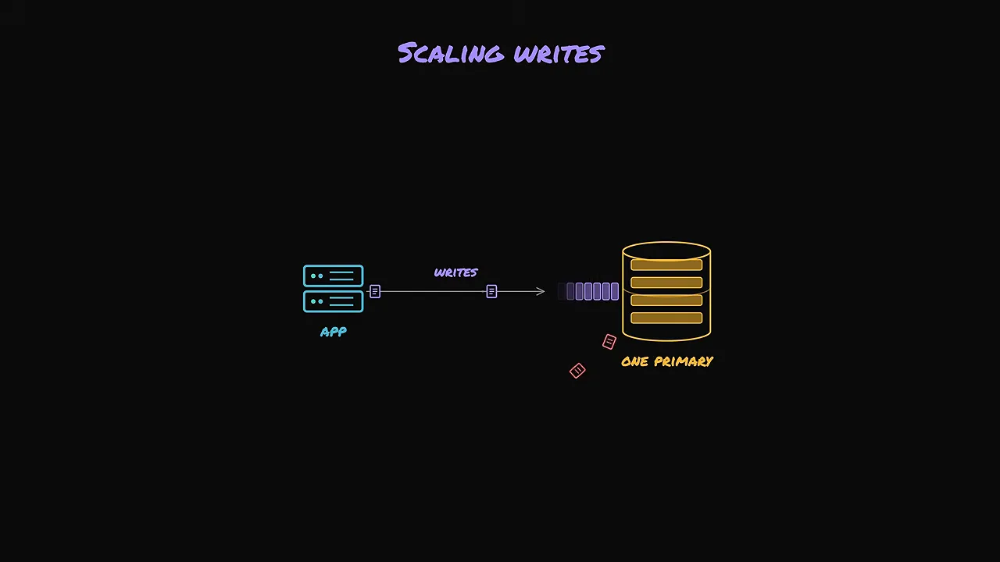
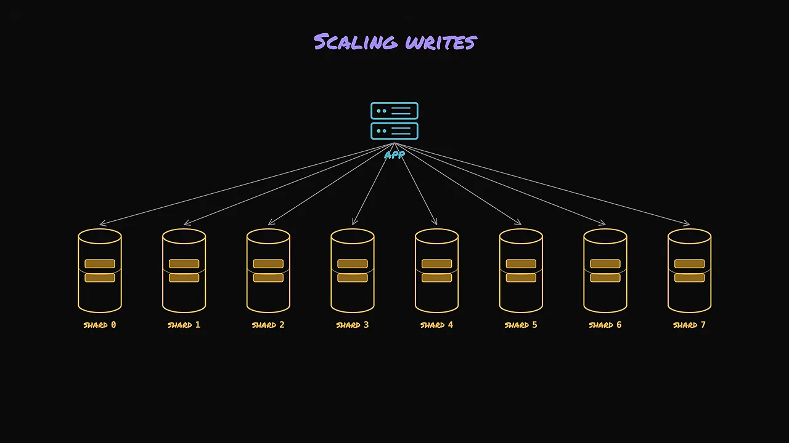
영상은 이게 팀들이 샤딩의 번거로움을 감수하는 이유라고 말해요. 쓰기를 여러 기계로 나눠 늘릴 수 있는 길은 이것 하나뿐이에요. 대신 데이터를 쪼개는 순간 새 문제가 생겨요. 첫 번째 문제는 '앨런의 데이터가 어느 샤드에 있는지 시스템이 어떻게 아느냐'예요.
샤드 키를 고르는 다섯 가지 기준
답은 앞 규칙에 이미 들어 있어요. 사용자를 나눌 때 기준으로 쓴 열이 사용자 ID였어요. 이렇게 데이터를 나누는 기준 열을 샤드 키라고 해요. 요청이 오면 그 사용자의 ID에 같은 규칙을 적용해서 샤드로 곧장 가요.
아래 화면 위쪽 상자에 'ID 41 ÷ 4 → 1'이 있고, 샤드 1이 점선으로 강조돼 있어요. 크리스(ID 41)의 행이 그 아래 표에 분홍색으로 표시돼 있어요. 화면 아래 문구가 핵심이에요. 'No searching, nobody to ask.'
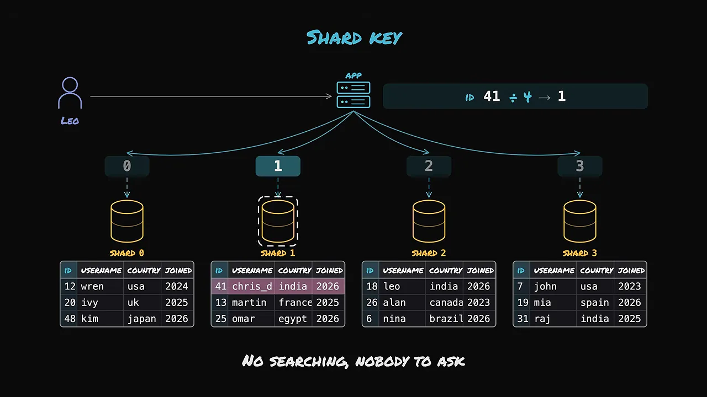
샤드 키는 나중에 바꾸기 어려워요
샤드 키를 사용자 ID에서 국가로 바꾼다고 해 볼게요. 아래 화면 위 상자가 'COUNTRY ÷ 4'로 바뀌었어요. 크리스와 레오는 ID 기준으로는 다른 샤드에 있었지만 둘 다 india라서, 국가 기준이면 같은 샤드에 있어야 해요. 그래서 샤드 1 표 맨 아래에 '18 leo'가 새로 끼어들어 있어요. 이걸 모든 샤드의 모든 행에 대해 해야 해요.
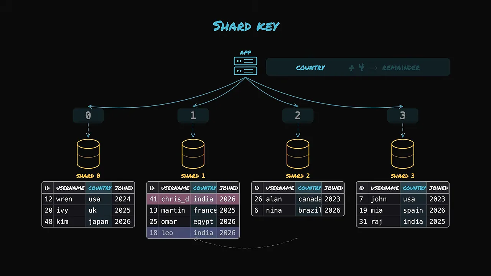
영상은 좋은 샤드 키의 조건을 다섯 가지로 정리해요. 화면 위쪽 탭('1 MANY VALUES'부터 '5 KEEPS DATA TOGETHER'까지)이 이 순서예요. 나쁜 예와 사용자 ID가 통과하는 이유를 한 표에 모으면 이래요.
| 조건 | 나쁜 예 | 무엇이 문제인가요 | 사용자 ID는요 |
|---|---|---|---|
| 1. 값이 많아야 해요 | 국가 | 약 200개 국가를 샤드 64개에 나누면 샤드당 3개꼴이에요. 인구가 많은 나라가 든 샤드만 과부하예요 | 수백만 개라 원하는 만큼 나눠요 |
| 2. 고르게 퍼져야 해요 | 가입 연도 | 빠르게 크는 앱은 올해 가입자가 대부분이라 올해 샤드만 바빠요 | 순서대로 붙어서 0, 1, 2, 3 샤드로 돌아가며 들어가요 |
| 3. 접근 방식과 맞아야 해요 | 글 ID | '이 사용자의 글 전부'를 찾으려면 모든 샤드에 물어야 해요 | 요청이 대부분 사용자 단위예요 |
| 4. 값이 바뀌지 않아야 해요 | 사용자 이름 | 이름을 바꾸면 데이터를 다른 샤드로 옮겨야 해요 | 한번 정해지면 안 바뀌어요 |
| 5. 관련 데이터를 모아야 해요 | 테이블마다 다른 키 | 프로필은 한 샤드, 글은 모든 샤드에 흩어져요 | 세 테이블을 모두 같은 키로 나눠요 |
1. 값이 많아야 해요
아래 화면 오른쪽 숫자가 '200 COUNTRIES, 64 SHARDS, ≈ 3 COUNTRIES EACH'예요. 왼쪽 원통 묶음에서 'INDIA'와 'CHINA' 두 개만 빨갛게 달아올라 있어요. 그린란드 같은 나라가 든 샤드는 거의 비어 있어요. 이렇게 서로 다른 값이 많은 성질을 카디널리티가 높다고 해요.
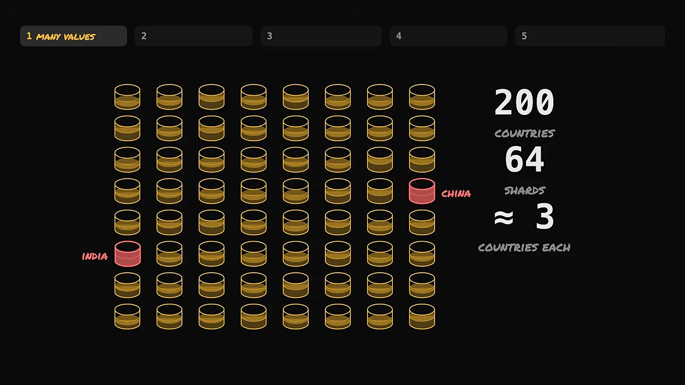
2. 고르게 퍼져야 해요
가입 연도로 나누면 샤드 0~3이 2023, 2024, 2025, 2026년을 맡아요. 아래 화면에서 2026년을 맡은 샤드 3만 데이터가 꽉 차 있고 글자도 밝아요. 지난 해 샤드는 해가 지났으니 새 행을 더 받지도 않아요.
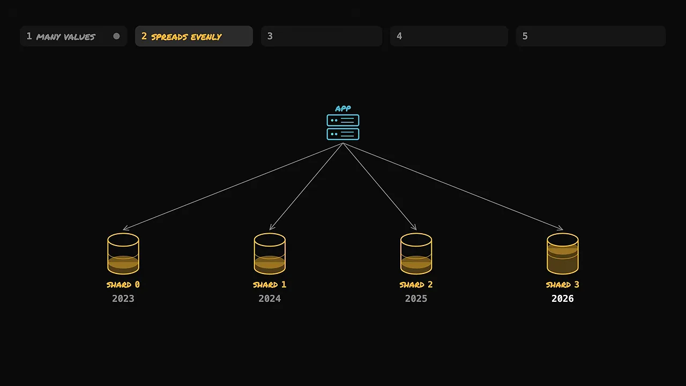
3. 접근 방식과 맞아야 해요
Chirp 요청 대부분은 '이 사용자가 올린 걸 다 보여 줘'예요. 그런데 글을 글 ID(post_id)로 나누면, 아래 화면처럼 user_id 41의 글이 샤드 네 개 표에 모두 흩어져 있어요. 레오에게서 나간 선이 네 샤드 모두로 뻗어 있어요.
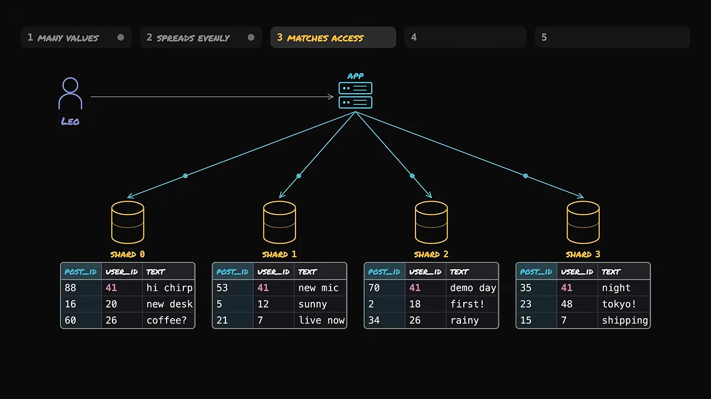
4. 값이 바뀌지 않아야 해요
사용자 이름으로 나눴다고 해 볼게요. 크리스가 이름을 chris_codes로 바꾸자 새 이름은 샤드 3을 가리켜요. 아래 화면에서 샤드 1과 샤드 3 사이 점선이 데이터를 옮기는 길이에요. 복사하다 중간에 실패하면 크리스의 글 일부는 샤드 1에, 일부는 샤드 3에 남고, 앱은 어디서 찾아야 할지 몰라요.
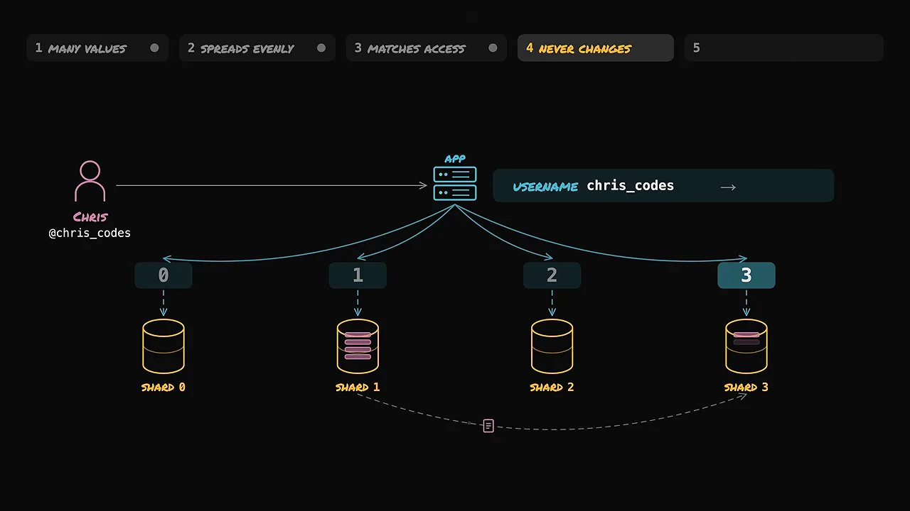
5. 관련 데이터를 한곳에 모아야 해요
Chirp에는 users, chirps, likes 세 테이블이 있어요. 사용자는 사용자 ID로, 글은 글 ID로 나누면 프로필은 샤드 2에 있어도 글은 모든 샤드에 흩어져요. 세 테이블을 모두 user_id로 나누면, 아래 화면 샤드 2의 점선 상자처럼 크리스의 프로필과 글과 좋아요가 한 샤드에 모여요.
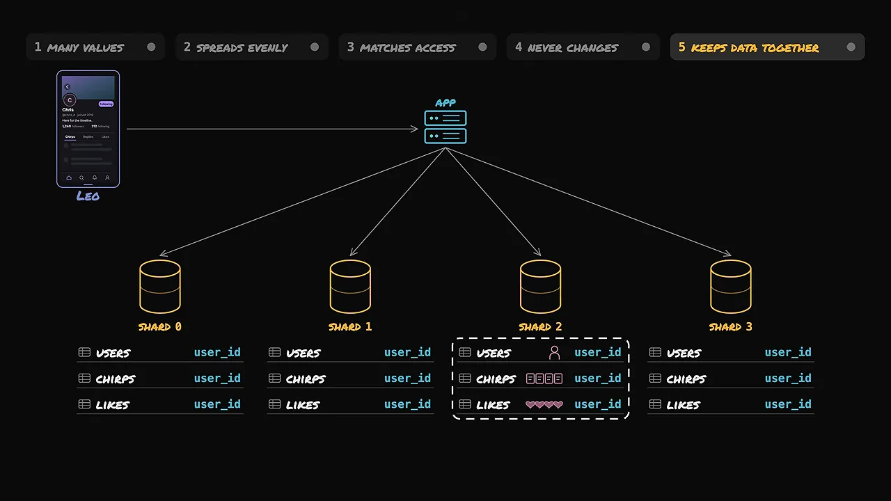
사용자 ID는 다섯 가지를 모두 통과해서 Chirp의 샤드 키가 돼요.
숫자가 아닌 키는 해시로
지금까지는 사용자 ID가 숫자라서 4로 나눌 수 있었어요. 하지만 샤드 키가 이메일이나 사용자 이름이라면 4로 나눌 수 없어요. 어떤 값이든 받아서 숫자를 돌려주고, 사용자를 샤드에 고르게 퍼뜨리는 규칙이 필요해요.
아래 화면 가운데 'RULE' 상자가 그 규칙이에요. 왼쪽에 chris@gmail.com을 두 번 넣었더니 오른쪽에 두 번 다 같은 숫자 2080014952가 나왔어요. 같은 이메일은 언제나 같은 숫자가 나와야 크리스가 늘 같은 샤드에 있어요.
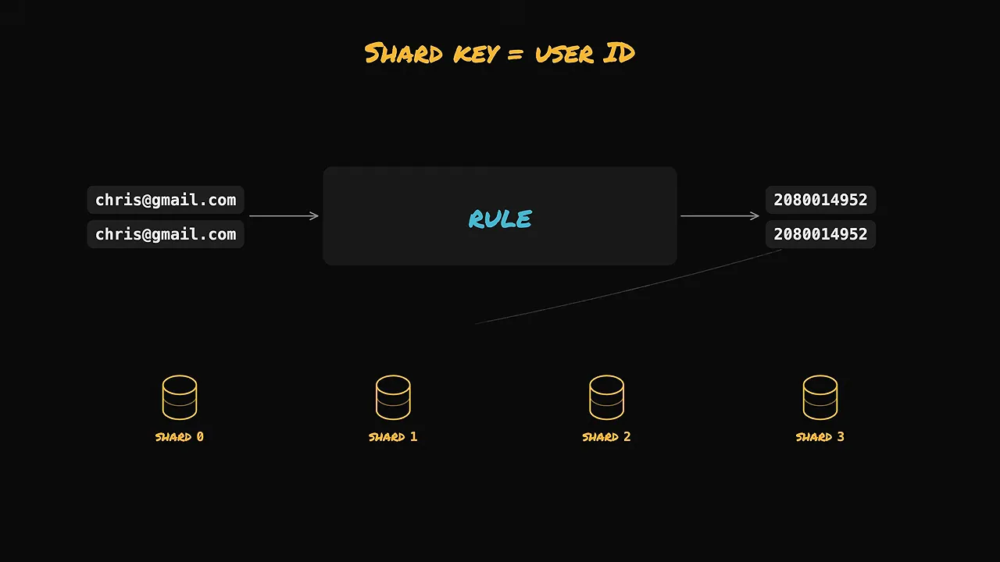
해시 함수는 직접 만들 필요가 없어요. 파이썬이라면 표준 라이브러리의 hashlib 모듈이 있어요. 안에서는 글자를 숫자로 바꾸고 여러 단계로 섞어서, 입력이 한 글자만 달라도 결과가 완전히 달라져요.
파이썬 내장 hash()는 샤딩에 못 써요
파이썬에는 내장 함수 hash()도 있어요. 아래 화면에서 같은 이메일 두 개가 같은 숫자 8987652885257071915를 받았고, 위에 'Still running → same hash'라고 붙어 있어요. 프로그램이 켜져 있는 동안만 같다는 뜻이에요.
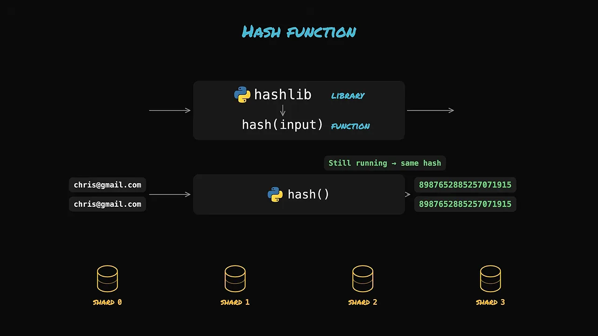
영상은 이게 보안 때문이라고 설명해요. 실제 시스템은 무작위 값을 섞지 않는 해시를 써서, 어느 기계에서든 재시작해도 같은 숫자가 나오게 해요. 예로 든 게 MongoDB의 해시 샤딩이에요. 고른 열을 데이터베이스가 직접 해시해 줘요.
해시가 샤딩에 주는 두 가지
아래 화면 가운데 두 줄이 영상이 꼽는 성질이에요. '1. SAME INPUT → ALWAYS THE SAME NUMBER', '2. INPUTS NEXT TO EACH OTHER → FAR APART'. 아래 수직선은 0부터 4,294,967,295까지예요. 41은 873899871, 42는 2714814184로, 바로 옆 숫자인데 선 위에서 멀리 떨어져 있어요.
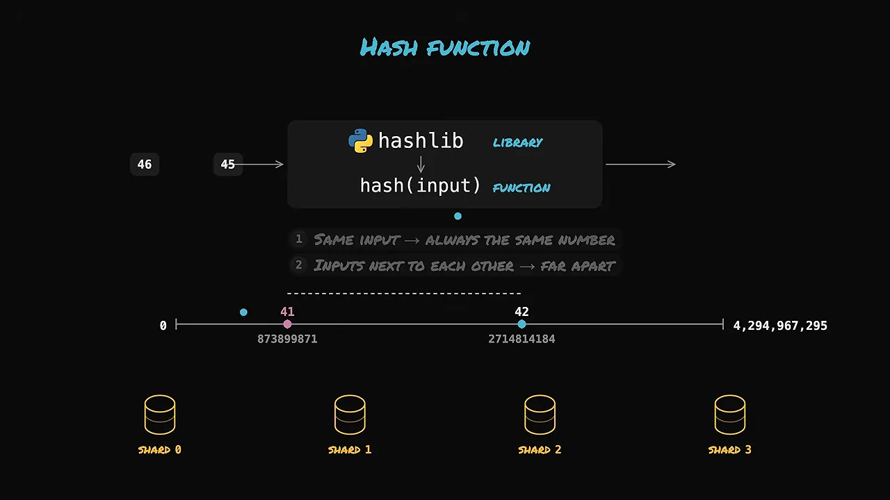
최종 규칙은 '샤드 키를 해시하고, 샤드 수로 나눈 나머지'예요. 크리스(ID 41)의 해시를 4로 나눈 나머지는 3, 레오(ID 18)의 해시 1867064052를 4로 나눈 나머지는 0이에요. 아래 화면에서 샤드 3 표 맨 아래에 41, 샤드 0 표 맨 아래에 18이 새로 들어가 있어요.
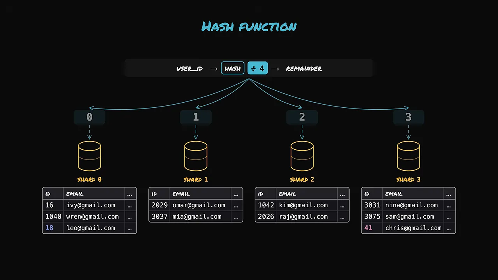
이 규칙은 사용자 ID와 샤드 수만 있으면 계산돼요. 그래서 어느 기계든 다른 기계를 보지 않고 혼자 샤드를 정할 수 있어요. 뒤에서 이 '샤드 수'가 규칙에 들어 있다는 점이 문제로 돌아와요.
해시 말고 다른 나누기 방식
해시만 있는 건 아니에요. 영상은 업계에서 쓰는 다른 방식 세 가지를 앱 종류와 묶어서 보여 줘요.
범위 샤딩
해시 없이 샤드마다 값의 범위를 줘요. 은행 거래 앱에서 사용자가 대부분 '3월 거래 전부 보여 줘'라고 묻는다면 날짜로 나눠요. 아래 화면에서 샤드 0이 Jan–Mar, 샤드 1이 Apr–Jun을 맡고, 샤드 0 표에 1~3월 거래가 모여 있어요.
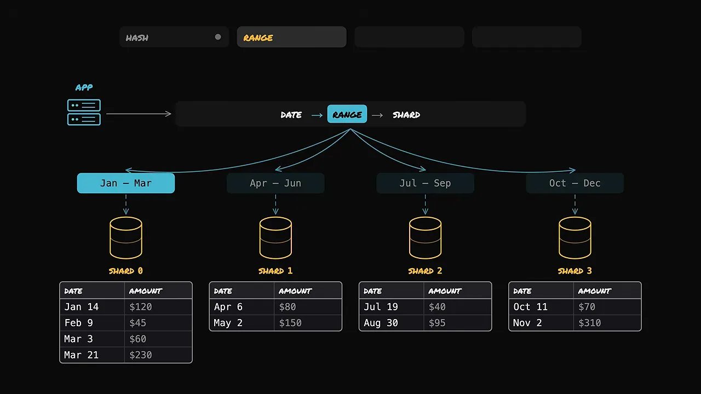
대가도 분명해요. 새 거래는 모두 오늘 날짜라서, 아래 화면처럼 Oct–Dec를 맡은 샤드 3만 빨갛게 달아올라요. 샤드 3 표에만 Oct 5 거래가 계속 쌓이고 있어요. 앞에서 본 '가입 연도' 문제와 같은 모양이에요.
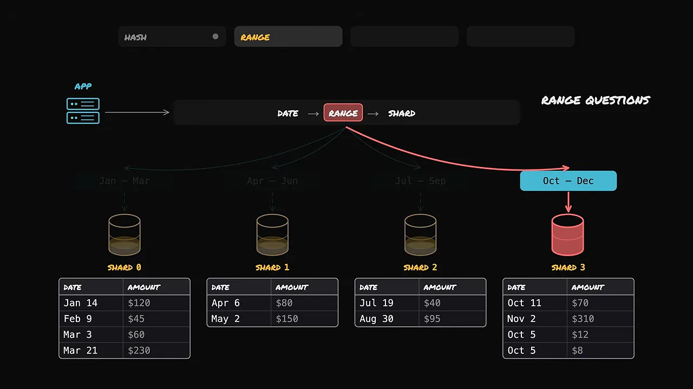
디렉터리 샤딩
고객이 어느 샤드에 있는지 적은 조회 테이블(디렉터리)을 둬요. 아래 화면 위 표에 Acme 0, Birch 1, Cobalt 2, Globex 3이 적혀 있어요. 샤드 아래 숫자를 보면 Acme·Birch·Cobalt는 직원 50명인데 Globex만 50,000명이에요. 표의 행 하나만 고쳐서 Globex에게 샤드 3을 통째로 줬어요.
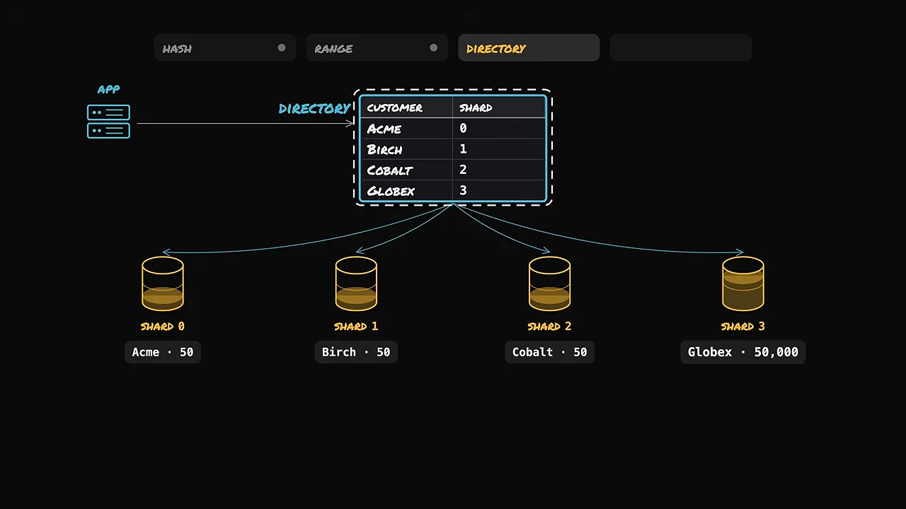
지역 샤딩
유럽 사용자는 유럽 기계에 두는 식으로 지역별로 나눠요. 이유는 두 가지예요. 데이터가 사용자 가까이 있어서 빠르고, 개인정보 규칙이 유럽 사용자 데이터를 유럽에 두라고 요구할 수 있어요.
앞에서 국가는 고르지 않아서 샤드 키로 부적합하다고 했어요. 영상은 두 단계로 나눠서 이 문제를 풀어요. 아래 화면 오른쪽 위 두 줄이 그 순서예요. '1. REGION → MACHINE GROUP', '2. USER ID → SHARD'. 점선 상자가 유럽 기계 묶음이고, 그 안에 샤드 세 개가 있어요.
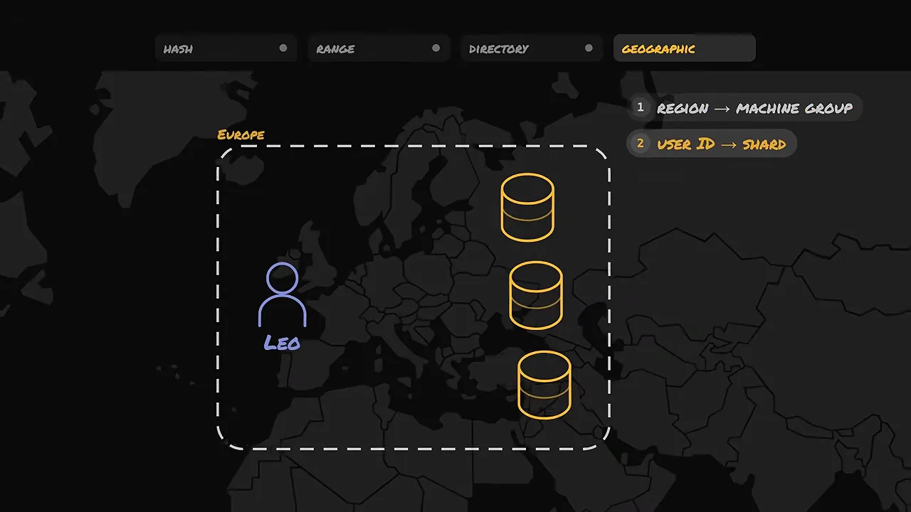
어떤 걸 고를까요
영상은 네 방식을 카드 네 장으로 정리해요. 카드 아래 문구가 각각 언제 쓰는지예요.
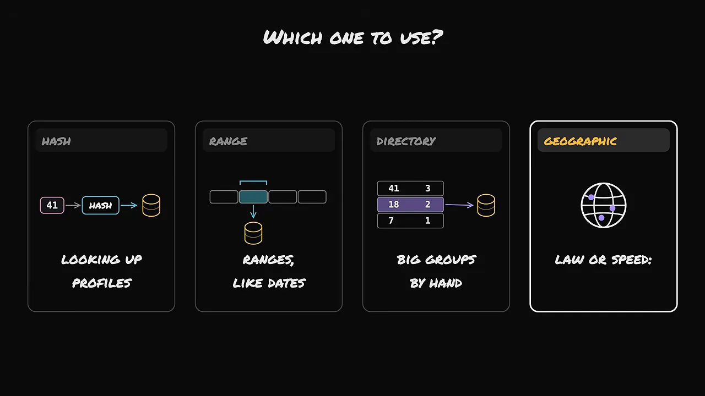
| 방식 | 나누는 기준 | 잘 맞는 경우 | 대가 |
|---|---|---|---|
| 해시 | 키의 해시 ÷ 샤드 수 | 다른 사용자의 프로필을 보는 앱 | 영상에서는 따로 짚지 않아요 |
| 범위 | 값의 구간(날짜 등) | '3월 거래 전부' 같은 범위 질문 | 새 쓰기가 최신 샤드에 몰려요 |
| 디렉터리 | 조회 테이블 | 유독 큰 묶음을 손으로 배치할 때 | 모든 요청이 디렉터리를 거쳐요. 멈추면 전부 멈춰요 |
| 지역 | 지역 → 그 안에서 키 | 법이나 속도 때문에 위치가 정해질 때 | 지역 안에서 다시 좋은 키가 필요해요 |
Chirp의 요청은 대부분 '이 사용자 프로필 열기'와 '이 사용자 글 보기'이고, 데이터를 특정 지역에 묶는 규칙도 없어요. 그래서 사용자 ID 해시를 그대로 써요.
요청을 맞는 샤드로 보내는 라우팅 레이어
요청이 들어오면 누군가 사용자 ID를 해시하고, 샤드를 정하고, 그 샤드로 요청을 보내야 해요. 이 일을 하는 부분이 라우팅 레이어예요. 하는 일은 요청을 맞는 샤드로 넘기는 것뿐이고, 놓을 수 있는 자리가 세 곳이에요.
1. 앱 안에 두기
Chirp 앱은 프로필, 피드, 좋아요를 맡는 작은 마이크로서비스 여러 개로 이뤄져 있어요. 서비스마다 라우팅 규칙을 직접 들고 있으면, 크리스가 자기 데이터를 열 때 프로필 서비스가 '41이면 샤드 3'을 계산해서 바로 연결해요. 중간에 아무것도 없어서 가장 빨라요.
문제는 샤드 수를 바꿀 때예요. 아래 화면에서 샤드 4가 새로 생겨 'UPDATE ÷ 5'를 했는데, 'PROFILE'과 'FEED' 상자는 '÷ 5'로 바뀌었고 'LIKES' 상자만 아직 '÷ 4'예요.
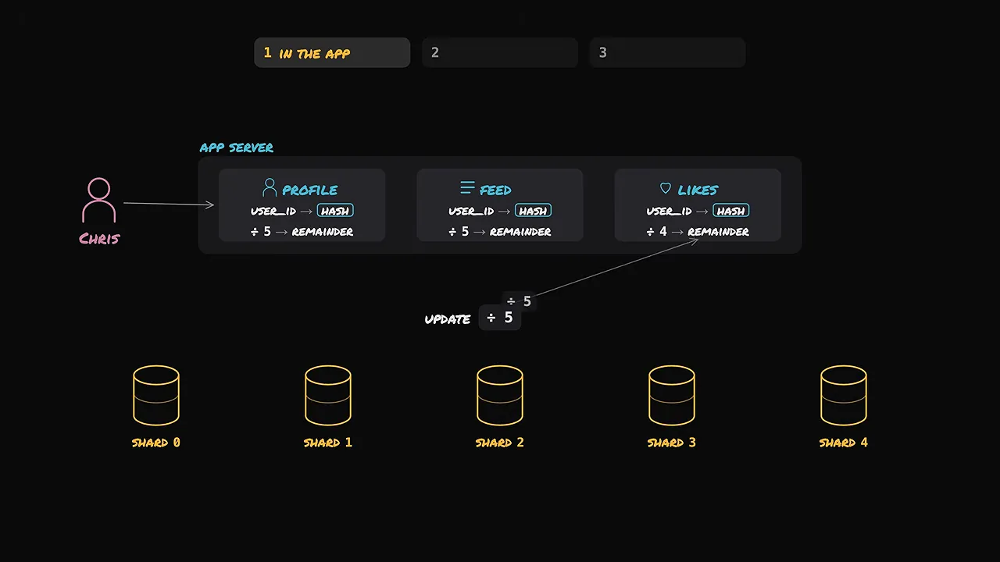
2. 프록시로 따로 두기
앱과 샤드 사이에 별도 프로그램을 두고 모든 서비스가 요청을 이 프로그램에 보내요. 이 프로그램을 프록시라고 하고, 영상은 MongoDB가 이렇게 동작한다고 말해요. 규칙이 한 곳에만 있으니 샤드 수가 바뀌면 프록시만 고치면 돼요.
대신 아래 화면 아래쪽 'RESPONSE TIME' 막대 끝에 '+ PROXY STEP'이 붙어 있어요. 단계가 하나 늘어난 만큼 응답이 조금 느려져요. 그리고 모든 요청이 지나가니 프록시가 바빠지면 전체가 느려져요. 그래서 화면 가운데 'PROXY' 줄처럼 여러 벌을 띄워서 나눠 받고, 하나가 죽어도 나머지가 일하게 해요.
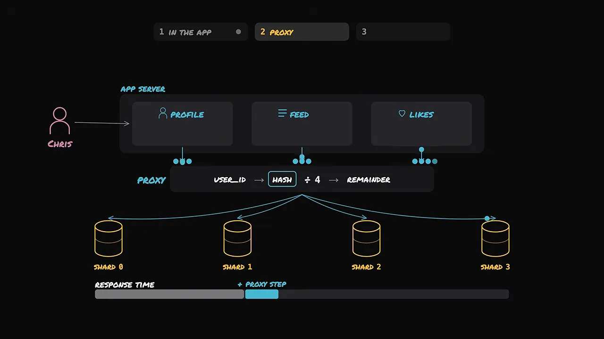
3. 데이터베이스 안에 두기
별도 프로그램 없이 아무 샤드에나 요청을 보내요. 요청을 받은 샤드가 데이터를 가진 샤드로 넘겨줘요. 아래 화면에서 앱 서버 전체가 점선으로 묶여 있고, 샤드마다 아래에 'HASH ÷ 4'가 붙어 있어요. 규칙이 샤드들 안에 들어가 있다는 뜻이에요.
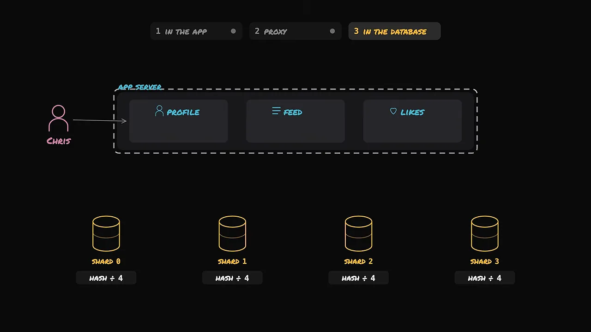
| 자리 | 좋은 점 | 샤드 수가 바뀌면 | 약점 |
|---|---|---|---|
| 앱 안 | 중간 단계가 없어 가장 빨라요 | 모든 서비스를 고쳐야 해요 | 하나라도 빠뜨리면 엉뚱한 샤드로 가요 |
| 프록시 | 규칙이 한 곳에만 있어요 | 프록시만 고쳐요 | 한 단계 느려지고 병목이 될 수 있어요 |
| 데이터베이스 안 | 가장 손이 덜 가요 | 영상에서는 따로 짚지 않아요 | 데이터베이스 방식에 맞춰야 해요 |
어디에 두든 라우팅 레이어의 일은 같아요. 모든 요청을 데이터가 실제로 있는 샤드로 보내는 것이에요.
한 샤드만 바빠질 때: 핫스팟과 솔팅
사용자를 고르게 나눴는데도 샤드 하나만 바빠질 수 있어요. 팔로워 4천만 명인 팝스타 레나의 사용자 ID(500)가 해시돼서 샤드 2로 갔다고 해 볼게요. 샤드마다 초당 약 10만 건의 읽기를 감당할 수 있어요.
레나가 글을 올리면 아래 화면처럼 레나의 팔로워 묶음에서 나온 요청이 샤드 2 하나로 쏟아져요. 샤드 2는 빨갛게 달아올라 '100K READS/SEC' 한계를 넘었고, 나머지 샤드 옆에는 '20K/sec'만 적혀 있어요.
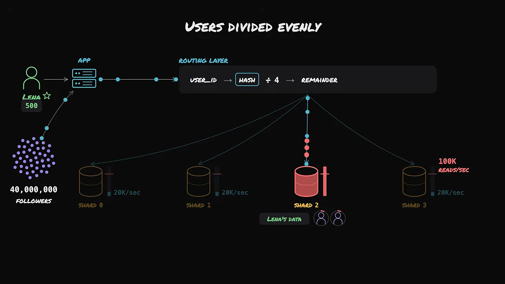
영상은 흔히 쓰는 해법 세 가지를 차례로 쌓아 올려요. 팀들은 보통 셋을 섞어 써요.
1. 레나에게 샤드를 따로 줘요
라우팅 레이어에 '레나의 ID면 샤드 4로'라는 규칙을 넣어요. 아래 화면 라우팅 레이어 안 DIRECTORY 표에 'USER_ID 500 → SHARD 4'가 강조돼 있어요. 앞에서 배운 디렉터리 샤딩이에요. 레나의 ID가 아니면 평소처럼 해시해서 4로 나눠요.
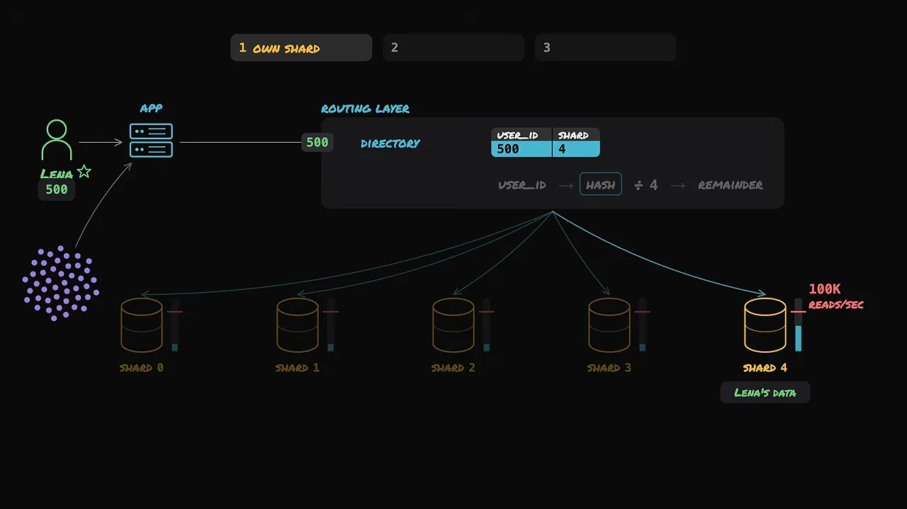
2. 읽기는 캐시가 받아요
레나 쪽 부하는 대부분 읽기예요. 그래서 앱과 라우팅 레이어 사이에 빠른 캐시를 둬요. 아래 화면에서 'APP' 오른쪽의 번개 모양 'CACHE'가 새로 생겼어요. 읽기는 대부분 여기서 답하고 샤드 4까지 가지 않아요.
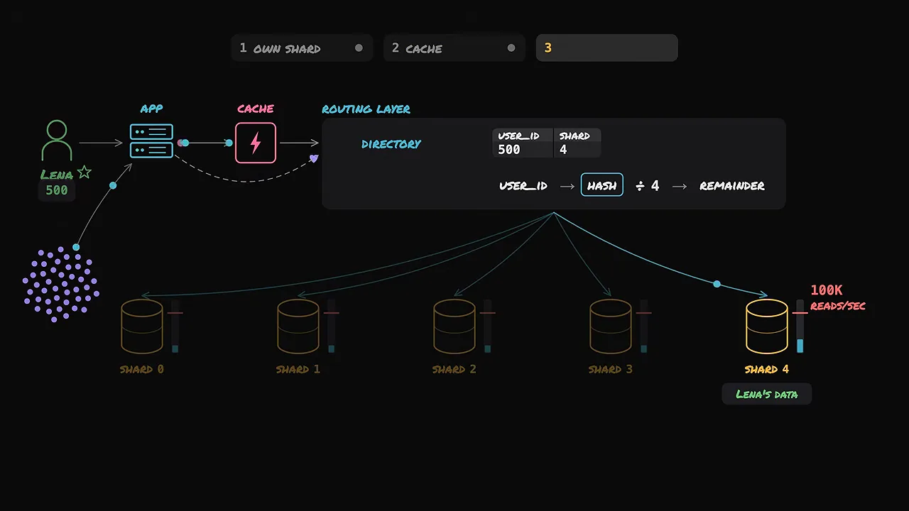
3. 쓰기는 솔팅으로 흩어요
큰 앱은 좋아요를 두 번 저장해요. 하나는 누른 사람의 샤드에 둬서 크리스가 누른 좋아요가 모두 크리스의 샤드에 모이게 해요. 다른 하나는 글 옆에 둬서 좋아요 수와 누른 사람 목록을 샤드 하나에서 읽게 해요. 앞에서 본 코로케이션이에요. 그러면 레나 글의 좋아요 수백만 건이 전부 샤드 4에 쓰기로 몰려요.
그래서 키에 숫자를 붙여요. 레나의 ID 500 대신 500-1부터 500-10까지 키 10개를 만들고, 새 좋아요를 그중 하나에 담아요. 붙인 숫자가 솔트예요. 키가 한 글자만 달라도 해시가 완전히 달라지니, 아래 화면처럼 10개 키가 기존 샤드 0~3에 흩어져요(샤드 0에 500-1, 500-3, 500-10).
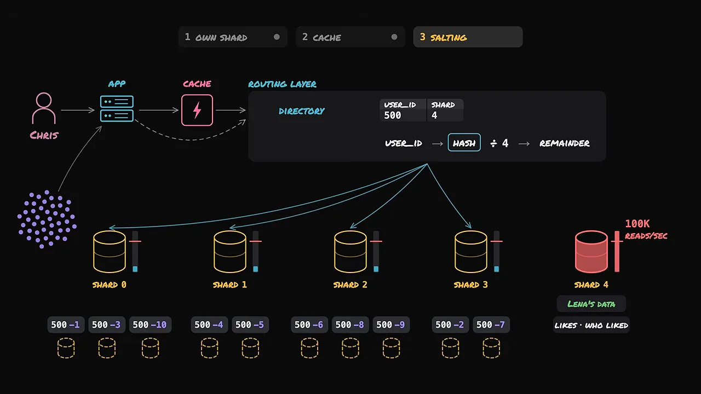
대가도 있어요. 레나 글의 총 좋아요 수를 보여 주려면 10개 키를 여러 샤드에서 다 읽어서 더해야 해요. 그래서 좋아요가 몇 개뿐인 크리스 같은 사용자에게는 솔팅을 하지 않고, 한 키에 쓰기가 몰리는 경우에만 해요. 라우팅 레이어는 어떤 키가 솔팅됐는지 목록을 들고 있어요. 아래 화면 라우팅 레이어 맨 위에 'SALTED KEYS: 500 → 500-1 … 500-10'이 추가됐어요.
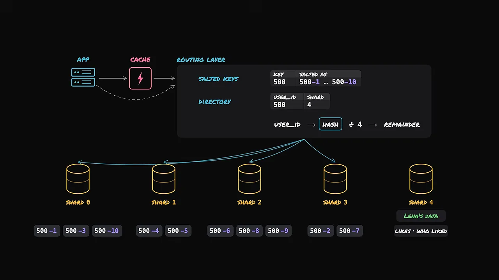
라우팅 레이어가 판단하는 순서
영상은 '한 번에 이해 안 되면 두 번 보라'며 판단 순서를 짚어요. 화면에서는 단계가 하나씩 켜지는데, 한 장에 모으면 아래와 같아요.
flowchart TD
R["요청"] --> C{"읽기이고
캐시에 있나요?"}
C -->|"예"| CA["캐시가 바로 답해요"]
C -->|"아니오 또는 쓰기"| Q1{"레나 글의
좋아요인가요?"}
Q1 -->|"좋아요 누르기"| S1["키 10개 중 하나를
무작위로 골라 저장"]
Q1 -->|"좋아요 수 보기"| S2["키 10개를 다 읽어 더하기"]
Q1 -->|"아니오"| Q2{"레나의 다른 요청인가요?
(프로필, 글)"}
Q2 -->|"예"| D["샤드 4로"]
Q2 -->|"아니오"| H["해시 ÷ 4로
평소처럼"]
샤드를 하나 늘리면 왜 데이터가 거의 다 움직일까요
사용자가 계속 늘어 샤드 0~3이 저장 한계에 가까워지면 샤드를 하나 더 넣어야 해요. 레나의 샤드 4는 레나만 담는 예외라서 평범한 사용자용으로는 못 써요. 가장 쉬운 방법은 새 샤드를 넣고 규칙을 '÷ 4'에서 '÷ 5'로 바꾸는 거예요.
그런데 규칙을 바꾸면 이미 저장된 데이터에도 새 규칙이 적용돼요. 아래 화면 위 상자에 “CHRIS'S HASH 4,821,371 ÷ 5 → 1”이 있어요. 같은 숫자를 4로 나누면 3이라서 크리스는 원래 샤드 3에 있었어요. 이제 샤드 1이 점선으로 강조돼 있어요.
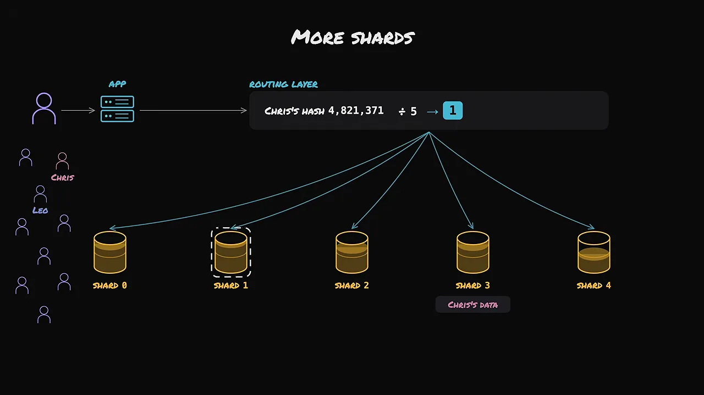
20명 중 16명이 이사해요
영상은 사용자 20명으로 직접 세어 봐요. 4로 나눌 때 샤드 0에는 4, 8, 12, 16, 20이 있었어요. 5로 나누면 사용자 5는 샤드 0으로, 8은 샤드 3으로, 12는 샤드 2로 가요. 아래 화면에서 빨간 칸이 자리가 바뀐 사용자이고, 그대로인 건 1, 2, 3, 20 넷뿐이에요.
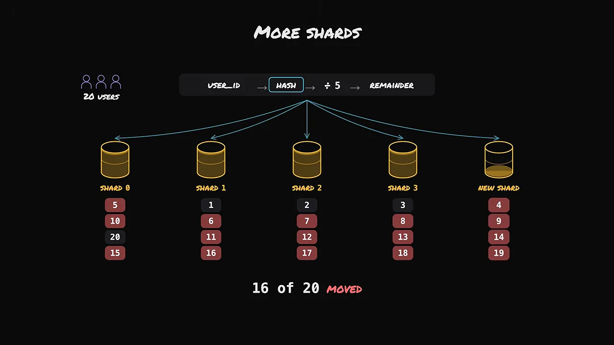
원인은 규칙 자체에 있어요. 샤드 수가 규칙 안에 들어 있어서, 그 숫자가 4에서 5로 바뀌면 거의 모든 사용자의 답이 바뀌어요. 그러면 샤드 수를 규칙에서 빼면 되지 않을까요? 영상은 이 질문으로 다음 개념을 꺼내요.
컨시스턴트 해싱과 가상 노드
컨시스턴트 해싱은 샤드 수를 규칙에서 빼는 방법이에요. 먼저 나올 수 있는 모든 해시 값을 직선에 늘어놓고, 그 선을 구부려 원을 만들어요. 가장 큰 해시 값 바로 옆에 가장 작은 값이 와요. 모든 해시가 들어 있어서 이 원을 해시 링이라고 불러요.
샤드들을 링 위 여러 지점에 놓아요. 규칙은 단순해요. 사용자 ID를 해시해서 링 위 자리를 찾고, 거기서 시계 방향으로 가다 처음 만나는 샤드가 그 사용자를 맡아요. 크리스는 샤드 3, 레오는 샤드 0을 만나요.
새 샤드는 한 구간만 가져가요
새 샤드를 샤드 1과 샤드 2 사이에 넣어요. 아래 화면에서 샤드 1과 새 샤드 사이의 굵은 회색 호가 원래 샤드 2로 가던 구간이에요. 이제 이 구간의 사용자는 새 샤드를 먼저 만나서 그쪽으로 옮겨 가요. 크리스와 레오는 여전히 샤드 3과 샤드 0을 먼저 만나서 그대로예요.
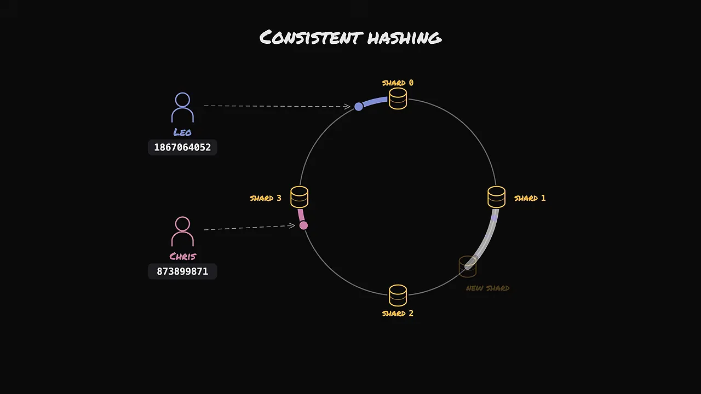
아래 화면이 앞의 규칙과 나란히 비교한 그림이에요. 왼쪽 'OLD RULE'(해시 ÷ 샤드 수)은 '16 of 20 MOVED', 오른쪽 'NEW RULE'(해시 링)은 'ONE SECTION MOVED'예요.
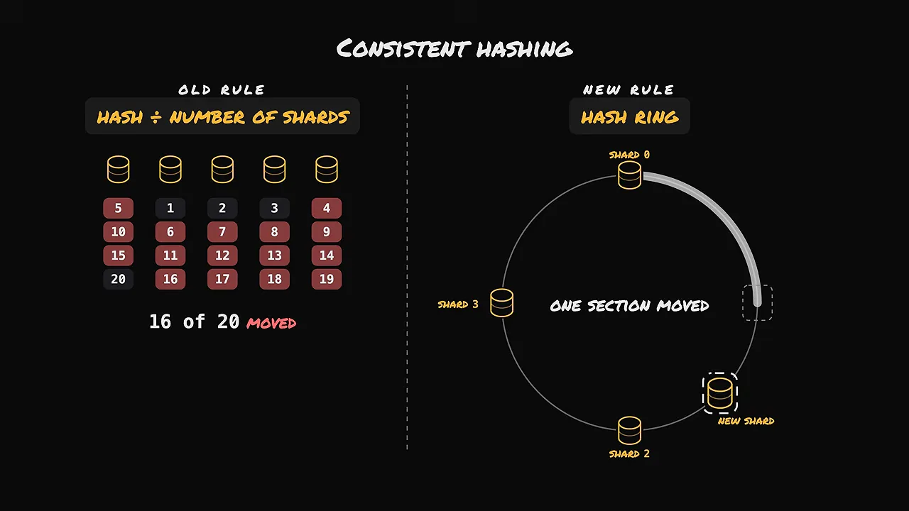
남은 문제: 구간 크기가 제각각이에요
링을 다시 보면 새 샤드는 늘 두 샤드 사이에 끼어들어요. 그래서 아래 화면처럼 샤드 3은 샤드 2까지 이어지는 'LARGE SECTION'을 맡고, 새 샤드는 'SMALL SECTION'만 맡아요. 부하가 고르지 않아요. 또 샤드 하나가 죽으면 시계 방향 다음 샤드가 그 구간을 통째로 떠안아요.
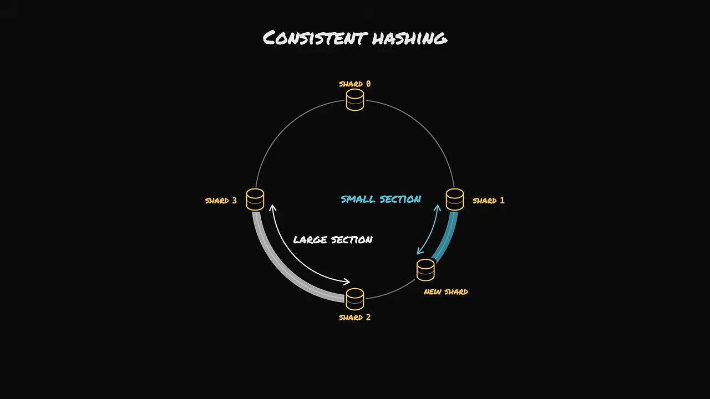
가상 노드: 한 샤드를 여러 자리에 놓아요
해법은 샤드 하나를 링에 여러 번 놓는 거예요. 영상 예시는 샤드마다 10군데예요. 기계 10대가 아니라 같은 기계를 가리키는 자리 10개이고, 이 자리들을 가상 노드라고 해요. 아래 화면에서 색깔별로 샤드 0~3, 새 샤드('NEW'), 하나 더 추가한 샤드('ONE MORE')의 점이 링 곳곳에 섞여 있어요.
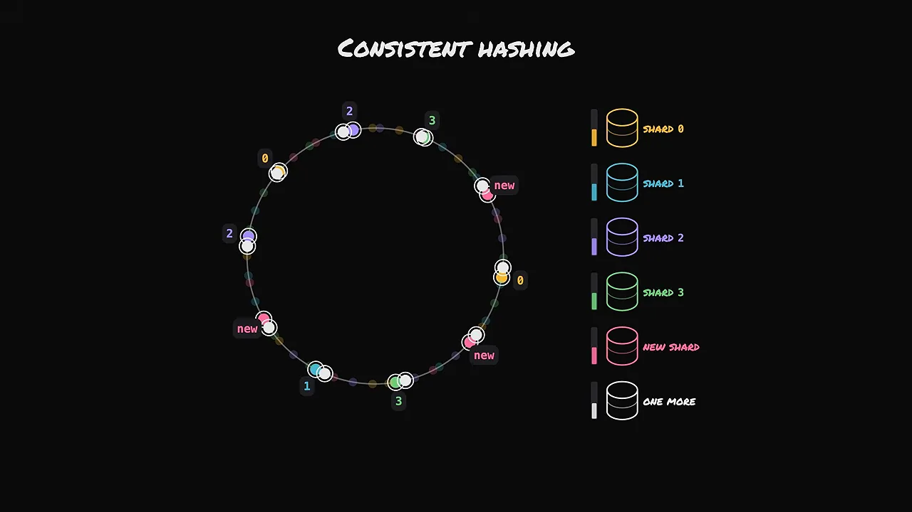
영상은 이 링을 머릿속에 그리기도, 손으로 관리하기도 어렵다는 말로 끝나요. 아래에서 직접 숫자를 바꿔 보며 두 규칙의 차이를 확인해 볼 수 있어요.
샤드를 한 대 늘리면
나머지 규칙: 0
해시 링: 0
링에서 가장 많이 맡은 샤드와 가장 적게 맡은 샤드: 0
가정: 나머지 규칙은 영상의 20명 예시처럼 ID 1번부터 차례로 ID ÷ 샤드 수의 나머지를 써요. 해시 링의 해시는 영상에 나오지 않은 FNV-1a 32비트 함수로 계산했어요.
- 처음 값(20명, 4대)에서 나머지 규칙 숫자를 보세요. 영상과 같은 16명(80%)이 나와요.
- 사용자를 2,000명으로 늘려 보세요. 나머지 규칙은 여전히 80% 근처인데, 해시 링은 새 샤드 바로 앞 구간만 움직여서 훨씬 적어요.
- 샤드 수를 10대, 사용자를 2,000명으로 두고 가상 노드를 1개, 10개, 50개로 올려 보세요. 가장 적게 맡은 샤드가 한 자릿수에서 100명대로 올라오고 막대 높이가 비슷해져요. 영상이 말한 '부하가 고르게 퍼진다'는 효과예요.